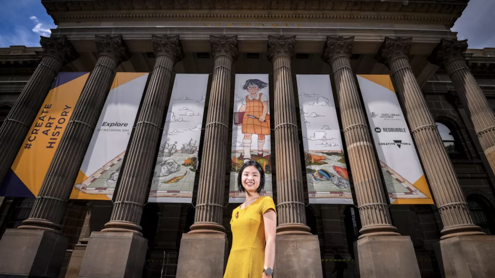
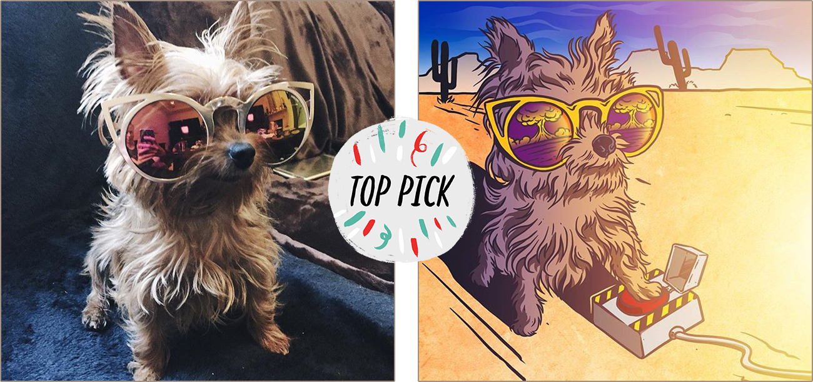
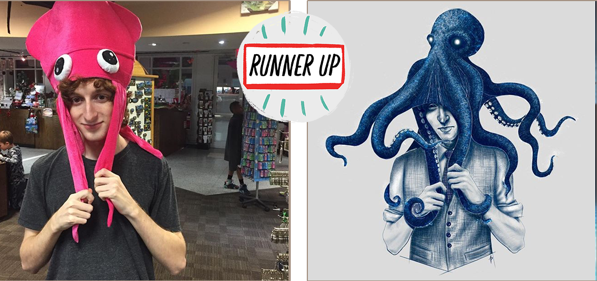

The problem
Every piece of brand communication has two audiences at once: artists deciding whether this platform deserves their work, and buyers deciding whether to care about art made by someone they've never heard of.
The brief
Build a thriving community, and a voice that can speak to both sides of the marketplace.
What I did
The work started in Melbourne and followed the company to San Francisco. It spanned across:
Social from scratch
Built Redbubble's global social presence from the ground up, growing Instagram, Facebook, and Twitter to 1M+ followers with a distinct voice tied to real business metrics.
Editorial and brand voice
Led editorial strategy across consumer and artist-facing channels, refining voice and tone and optimizing content for search.
Artist programs
Brand messaging for artist events and the artist residency program, across emails, landing pages, blogs, and press.
Campaigns at every scale
From small brand executions to global artist activations, including Create Art History, an artist contest in partnership with White Night Melbourne that reached an audience of 600k+.
Paid social
Campaigns across Facebook and Instagram, achieving a 4x return on ad spend.
Sample 1
#CreateArtHistory global artist activation
An artist contest in partnership with White Night Melbourne and the State Library of Victoria, reaching an audience of 600k+.


Sample 2
Redbubble Artist Instagram Challenge - 2015 - 2018
A social campaign inviting pet parents to submit photos for custom illustrated artwork, with a community-voted top pick.


And then what happened?
- The social community passed 1M followers, built from nothing.
- Create Art History was covered by The Age and Australian Geographic.
- Activations engaged thousands of artists and customers worldwide, helping the marketplace thrive.
What I learned
The most important piece to this was gaining artists’ trust: making sure they felt heard and educated while elevating their role in the ecosystem. We achieved this with an honest voice, a strong commitment to their customers and a deep understanding of cultural trends and self expression. This helped artists trust us with their work, and helped buyers discover the art that spoke to them.